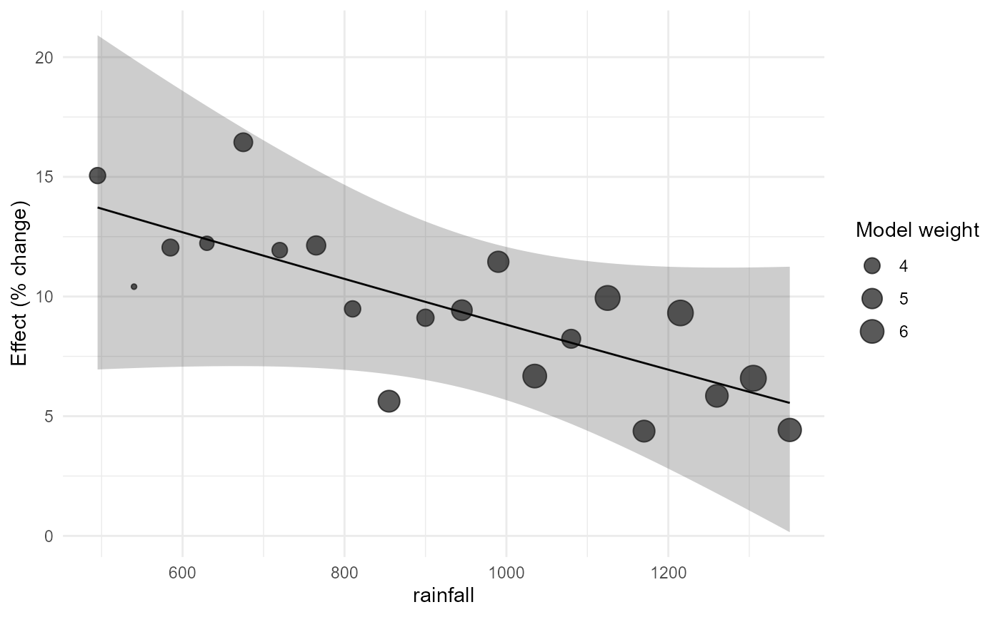
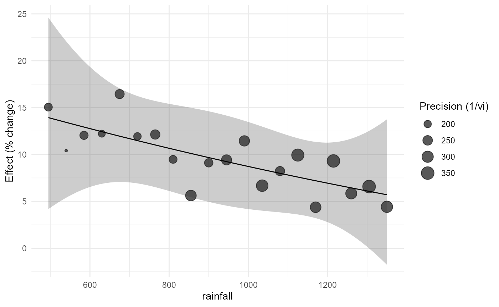

Meta-regression and Quantitative Agronomic Moderators
Source:vignettes/v05-meta-regression-quantitative-moderators.Rmd
v05-meta-regression-quantitative-moderators.Rmd1. Scientific role of a moderator
Meta-regression asks whether estimated treatment effects vary systematically with study-level or experiment-level characteristics. It does not turn observational differences among studies into randomized treatment contrasts. In agronomy this distinction is central because rainfall, temperature, soil texture, crop species, management intensity, and dose can be associated with many other differences among experiments.
Version 0.3.0 therefore separates three questions:
- moderator meta-regression, which describes effect modification across studies;
- quantitative moderator curves, which permit prespecified nonlinear associations while retaining the meta-analytic uncertainty model; and
- dose-response meta-analysis, treated separately in the next vignette, for multiple correlated dose contrasts within studies.
2. Build the effect-size data
irr_es <- apm_effect_size(irrigation_climate,"lnRR",m_t=mean_t,sd_t=sd_t,n_t=n_t,
m_c=mean_c,sd_c=sd_c,n_c=n_c)The effect measure is lnRR. Model coefficients are estimated on the logarithmic scale, while plots and tables may later be translated to ratios or percentage change.
3. Prespecified quantitative moderators
irr_m <- apm_metareg(irr_es, ~ rainfall + mean_temp)
irr_m
#> <apm_metareg> measure=lnRR | backend=metafor::rma.uni
#> term estimate
#> intrcpt 0.091321634
#> rainfall 0.001234469
#> mean_temp 0.264530461
#> Residual QE: 1.9013 | meta-R2 (%): NA
apm_table(irr_m, component="metareg", transform="percent")
#> term estimate se ci_lower ci_upper
#> intrcpt intrcpt 9.562 0.014 6.352 12.869
#> rainfall rainfall 0.124 0.021 -4.308 4.760
#> mean_temp mean_temp 30.282 4.295 -99.985 1122303.411Numeric moderators are centered by default. Consequently, the intercept corresponds to the expected effect near the observed mean values of rainfall and temperature rather than at an agronomically irrelevant rainfall of zero.
A second fit can be used to inspect whether scaling changes numerical conditioning without changing the scientific model.
irr_scaled <- apm_metareg(irr_es, ~ rainfall + mean_temp, center=TRUE, scale=TRUE)
irr_scaled
#> <apm_metareg> measure=lnRR | backend=metafor::rma.uni
#> term estimate
#> intrcpt 0.09132163
#> rainfall 0.32864473
#> mean_temp 0.35181648
#> Residual QE: 1.9013 | meta-R2 (%): NA4. Categorical moderators and adjusted marginal effects
bio_es <- apm_effect_size(bioinoculant_multicrop,"lnRR",m_t=mean_t,sd_t=sd_t,n_t=n_t,
m_c=mean_c,sd_c=sd_c,n_c=n_c)
bio_m <- apm_metareg(bio_es, ~ crop + site)
apm_marginal_effects(bio_m, variables="crop", transform="percent")
#> <apm_marginal> weights=equal | transform=percent
#> crop pred se ci_lower ci_upper pi_lower pi_upper
#> common_bean 6.523174 0.04309177 -2.6969728 16.61699 -2.6969728 16.61699
#> maize 8.323358 0.01875818 4.1374156 12.67756 4.1374156 12.67756
#> soybean 6.499606 0.03227482 -0.4824101 13.97147 -0.4824101 13.97147
#> wheat 4.453785 0.03682445 -3.3226227 12.85570 -3.3226227 12.85570
apm_marginal_effects(bio_m, variables="site", transform="percent")
#> <apm_marginal> weights=equal | transform=percent
#> site pred se ci_lower ci_upper pi_lower pi_upper
#> Areia 7.513153 0.02772860 1.4288506 13.96243 1.4288506 13.96243
#> Bananeiras 6.824014 0.02592614 1.1610659 12.80397 1.1610659 12.80397
#> Lagoa Seca 5.002177 0.02484524 -0.3381281 10.62864 -0.3381281 10.62864These are standardized predictions. They are preferable to interpreting a coefficient table as though every coefficient were a directly adjusted treatment effect.
5. Interactions
The scientific hypothesis should precede the interaction term. Here the question is whether the irrigation effect changes with rainfall differently among climate zones.
irr_i <- apm_metareg(irr_es, ~ rainfall * climate_zone)
apm_interaction(irr_i, "rainfall:climate_zone", at=list(rainfall=c(650,900,1200)))
#> <apm_interaction> rainfall:climate_zone | contrast=difference
#> label context estimate
#> slope_rainfall | climate_zone=humid rainfall=650 -1.288665e-04
#> slope_rainfall | climate_zone=humid rainfall=900 -1.288665e-04
#> slope_rainfall | climate_zone=humid rainfall=1200 -1.288665e-04
#> slope_rainfall | climate_zone=semiarid rainfall=650 1.238407e-05
#> slope_rainfall | climate_zone=semiarid rainfall=900 1.238407e-05
#> slope_rainfall | climate_zone=semiarid rainfall=1200 1.238407e-05
#> slope_rainfall | climate_zone=transition rainfall=650 -6.213622e-05
#> slope_rainfall | climate_zone=transition rainfall=900 -6.213622e-05
#> slope_rainfall | climate_zone=transition rainfall=1200 -6.213622e-05
#> se ci_lower ci_upper statistic df distribution p_value
#> 0.0002451578 -0.0006546776 0.0003969446 -0.52564722 14 t 0.6073594
#> 0.0002451578 -0.0006546776 0.0003969446 -0.52564722 14 t 0.6073594
#> 0.0002451578 -0.0006546776 0.0003969446 -0.52564722 14 t 0.6073594
#> 0.0003714827 -0.0007843670 0.0008091352 0.03333688 14 t 0.9738766
#> 0.0003714827 -0.0007843670 0.0008091352 0.03333688 14 t 0.9738766
#> 0.0003714827 -0.0007843670 0.0008091352 0.03333688 14 t 0.9738766
#> 0.0002574490 -0.0006143095 0.0004900370 -0.24135349 14 t 0.8127802
#> 0.0002574490 -0.0006143095 0.0004900370 -0.24135349 14 t 0.8127802
#> 0.0002574490 -0.0006143095 0.0004900370 -0.24135349 14 t 0.8127802
#> p_adjusted
#> 0.6073594
#> 0.6073594
#> 0.6073594
#> 0.9738766
#> 0.9738766
#> 0.9738766
#> 0.8127802
#> 0.8127802
#> 0.8127802
#> Joint interaction test:
#> statistic df1 df2 distribution p_value
#> 0.05299287 2 14 F 0.9485761For log-ratio effects, interaction contrasts may also be returned as ratios where scientifically meaningful.
apm_interaction(irr_i, "rainfall:climate_zone", contrast="ratio")
#> <apm_interaction> rainfall:climate_zone | contrast=ratio
#> label context estimate se
#> slope_rainfall | climate_zone=humid rainfall=922.5 0.9998711 0.0002451578
#> slope_rainfall | climate_zone=semiarid rainfall=922.5 1.0000124 0.0003714827
#> slope_rainfall | climate_zone=transition rainfall=922.5 0.9999379 0.0002574490
#> ci_lower ci_upper statistic df distribution p_value p_adjusted
#> 0.9993455 1.000397 -0.52564722 14 t 0.6073594 0.6073594
#> 0.9992159 1.000809 0.03333688 14 t 0.9738766 0.9738766
#> 0.9993859 1.000490 -0.24135349 14 t 0.8127802 0.8127802
#> Joint interaction test:
#> statistic df1 df2 distribution p_value
#> 0.05299287 2 14 F 0.94857616. Quantitative curves
A quadratic curve is useful only when motivated by the biological question and supported by the observed moderator range.
irr_quad <- apm_metareg_curve(irr_es, rainfall, form="quadratic")
irr_quad
#> <apm_metareg> measure=lnRR | backend=metafor::rma.uni
#> term estimate
#> intrcpt 9.036486e-02
#> .apm_x1 -8.761799e-05
#> .apm_x2 1.442002e-08
#> Residual QE: 1.9013 | meta-R2 (%): NA
apm_curve_features(irr_quad, features=c("slope","turning_point"))
#> <apm_curve_features>
#> Turning points:
#> [1] location lower upper inside_support
#> [5] interval_method
#> <0 rows> (or 0-length row.names)
#> Slope grid: 200 locations
#> Moderator-curve features are descriptive across-study associations and are not automatically causal dose recommendations.A spline offers more flexibility but also consumes information and can become unstable when few studies occupy parts of the range.
irr_ns <- apm_metareg_curve(irr_es, rainfall, form="ns", df=3)
apm_curve_features(irr_ns, features="slope")
#> <apm_curve_features>
#> Slope grid: 200 locations
#> Moderator-curve features are descriptive across-study associations and are not automatically causal dose recommendations.apm_curve_features() labels these quantities as
descriptive across-study features. A turning point is not automatically
an agronomic optimum.
7. Context-specific prediction
ctx <- data.frame(rainfall=c(650,900,1200), mean_temp=c(26.2,25.0,23.7))
apm_predict_context(irr_m, ctx, transform="percent", threshold=5)
#> <apm_prediction> transform=percent
#> rainfall mean_temp support pred se ci_lower ci_upper
#> 650 26.2 interpolation 11.48706 0.1049708 -10.66087 39.12566
#> 900 25.0 interpolation 10.50814 0.1088469 -12.16656 39.03644
#> 1200 23.7 interpolation 13.47020 0.9619565 -85.09063 763.58382
#> pi_lower pi_upper threshold_relation probability_above_threshold
#> -10.66087 39.12566 overlaps 0.7160321
#> -12.16656 39.03644 overlaps 0.6807267
#> -85.09063 763.58382 overlaps 0.5321391
#> probability_basis
#> normal approximation on the prediction distribution
#> normal approximation on the prediction distribution
#> normal approximation on the prediction distributionThe output retains whether each context is an interpolation or extrapolation relative to the fitted support. Prediction intervals, when estimable, answer a different question from confidence intervals: they describe uncertainty for a future context under the heterogeneity model.
8. Model comparison
Model comparison should be prespecified and interpreted together with biological plausibility, support, residual heterogeneity, and uncertainty.
m_lin <- apm_metareg(irr_es, ~ rainfall)
m_cov <- apm_metareg(irr_es, ~ rainfall + mean_temp)
apm_model_compare(m_lin, m_cov, criterion="AICc")
#> <apm_model_comparison> criterion=AICc
#> model k p logLik AIC AICc BIC delta weight
#> model1 20 3 36.04221 -66.08443 -64.58443 -63.09723 0.000000 0.8294079
#> model2 20 4 36.04411 -64.08822 -61.42156 -60.10529 3.162873 0.1705921
apm_model_compare(m_lin, m_cov, criterion="BIC")
#> <apm_model_comparison> criterion=BIC
#> model k p logLik AIC AICc BIC delta weight
#> model1 20 3 36.04221 -66.08443 -64.58443 -63.09723 0.000000 0.8169725
#> model2 20 4 36.04411 -64.08822 -61.42156 -60.10529 2.991939 0.1830275The package does not perform automated stepwise selection.
9. Bubble plots
apm_bubble(m_lin, rainfall, transform="percent")
apm_bubble(irr_quad, rainfall, size="precision", transform="percent")
The points are observed effect sizes. The line is generated by the fitted meta-regression; it is not a generic smoother.
10. Dependence-aware meta-regression
Nitrogen contrasts from the same experiment share the zero-N control. Their sampling errors are correlated.
mz_es <- apm_effect_size(maize_n_shared,"lnRR",m_t=mean_t,sd_t=sd_t,n_t=n_t,
m_c=mean_c,sd_c=sd_c,n_c=n_c)
mz_V <- apm_vcov(mz_es, cluster=experiment_id, shared_control=TRUE)
mz_m <- apm_metareg(mz_es, ~ N_rate + soil_texture, V=mz_V,
random=~1|study_id/effect_id)
apm_marginal_effects(mz_m, variables="soil_texture", weights="study", transform="percent")
#> <apm_marginal> weights=study | transform=percent
#> soil_texture pred se ci_lower ci_upper pi_lower pi_upper
#> clay 9.407854 0.03134488 2.483151 16.80045 NA NA
#> loam 9.247484 0.02928991 2.772532 16.13038 NA NA
#> sandy 9.836766 0.03578598 1.936194 18.34967 NA NAIgnoring mz_V would treat several contrasts that reuse
the same control as if their sampling errors were independent.
11. Recommended interpretation sequence
For an agronomic meta-regression, report at least:
- the prespecified moderator hypothesis;
- the effect-size scale;
- whether effects were independent or correlated;
- moderator coefficients or adjusted marginal predictions with intervals;
- residual heterogeneity;
- the observed moderator support;
- prediction intervals where identifiable;
- whether predictions represent interpolation or extrapolation; and
- a clear distinction between across-study association and causal dose response.